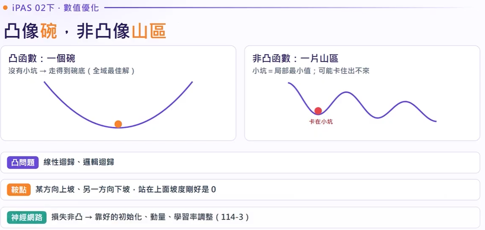
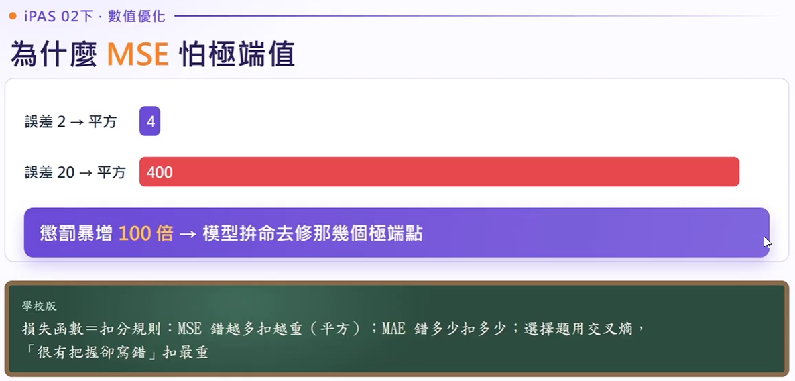
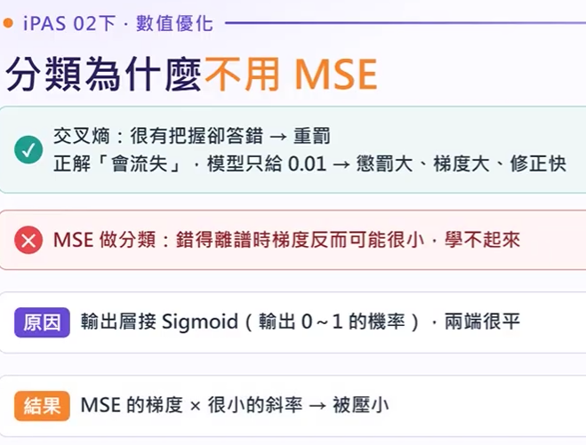
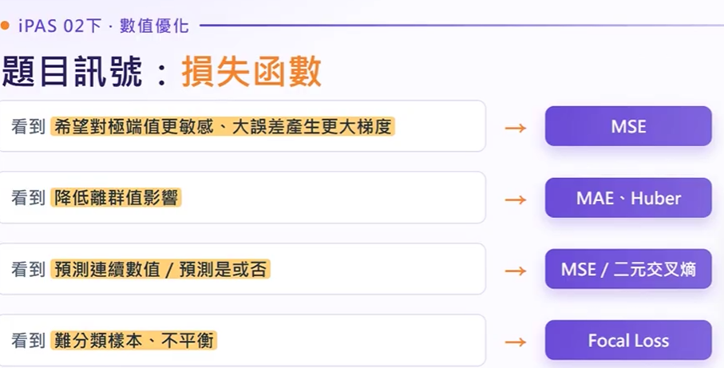
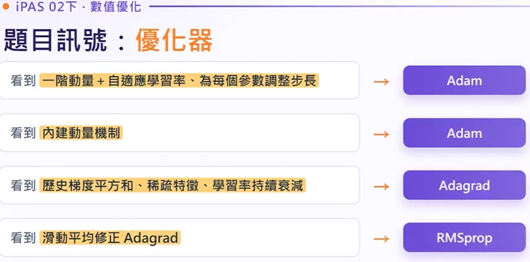
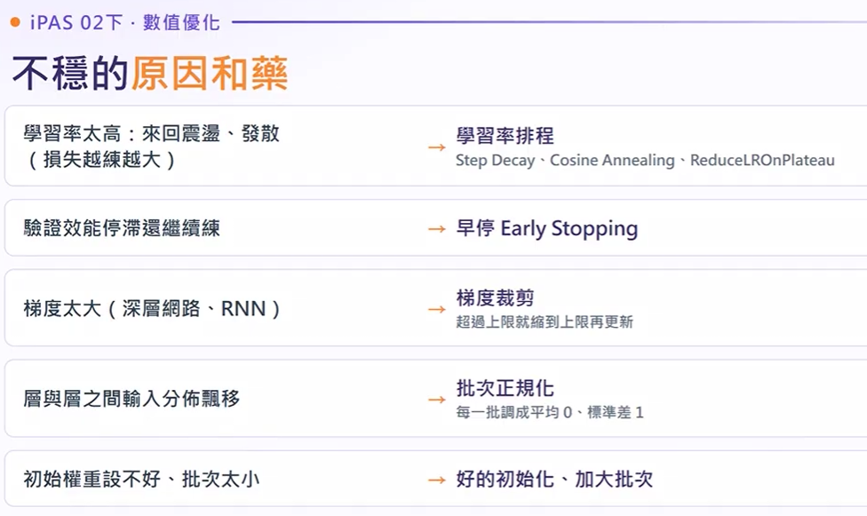
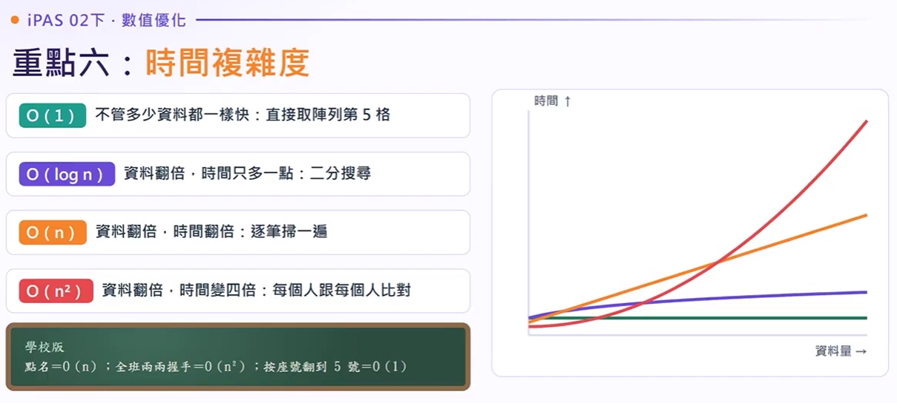

開場思考與核心問題導入
在深度學習訓練中，普通梯度下降（SGD）往往像無頭蒼蠅，在狹長山谷中左右劇烈擺盪、在平緩鞍點寸步難行。為什麼工程師會想到引入「物理動量 (Momentum)」？如果為每個權重分別配備獨立的適應性學習步長，又會帶來什麼革命性變革？
開場思考題：為什麼不能只把學習率調大來加快訓練？
訓練神經網路好比「蒙眼下山」：山的高度代表當前的損失 (Loss)、腳底探測出的陡峭傾斜是梯度 (Gradient)、每次跨出的步幅大小為學習率 (Learning Rate, $\eta$)。沿著坡度最陡的反方向前進，抵達平地無坡處即為收斂 (Convergence)。
形狀如圓碗，任意兩點連線必在函數圖形上方。無局部極小陷阱，只要學習率適中，從任意起點皆能收斂至唯一最低點。
存在多個「局部極小值 (Local Minima)」與「鞍點 (Saddle Point)」，傳統純梯度下降極易卡在次佳解或平緩區域。
在深度學習訓練非線性神經網路時，最容易面臨的根本困難是「容易陷入局部最佳解 (Local Minima) 或鞍點」，其主因是神經網路的目標函數為非凸函數 (Non-convex)。
觀念辨析：「梯度消失 (Vanishing Gradient)」是因深度網路反向傳播連乘 Sigmoid/Tanh 的導數所致，屬於架構與反向傳播鏈鎖律問題，並非凸性本身定義。
全章六大核心考點全景導圖：凸性、損失函數、小批次、Adam、時間複雜度
山高=損失值、坡度=梯度、每步=學習率、往坡下=反梯度、平地=收斂
目標函數、決策變數、可行域、函數性質；學校版生動比喻

凸函數全域唯一最佳解；非凸函數陷小坑（局部最小值）與鞍點
平滑曲線才能微分；ReLU 在 0 點不可微的工程處理
非線性模型目標函數為非凸函數，更新過程最可能發生什麼？
起點不同停在不同坑；非凸造成局部最優，非梯度消失或過擬合
訓練模型就是解最佳化問題！四要素包含目標函數（損失）、決策變數（權重）、可行域（參數限制）與函數性質。凸函數如碗底保證找到全局最佳；非凸函數如連綿山脈極易陷入局部最優解 (Local Minimum) 或鞍點 (Saddle Point)！
MSE 均方誤差 (放大鏡)、MAE 絕對誤差 (一視同仁)、Huber 平滑折衷
交叉熵 (分類標準)、Hinge Loss (SVM間隔)、Focal Loss (不平衡專用)

誤差 2 變 4，誤差 20 變 400！懲罰暴增 100 倍造成模型被離群值拉偏

Sigmoid 兩端飽和斜率趨近 0，錯得離譜時反而學不動；交叉熵能強力懲罰

看到對極端值敏感選 MSE、降低離群值選 MAE/Huber、不平衡選 Focal
拖曳滑桿改變誤差值 $e = (y - \hat{y})$，即時觀察各函數的懲罰成長幅度與梯度大小
GD (全班問完走一步)、SGD (隨機問一人就走)、Mini-batch (一小疊問完走)
平均梯度逼近整體且 GPU 矩陣平行加速，深度學習業界標準配置
點擊下方按鈕觀察三種方式在等高線地形中的更新路徑差異與抖動特性
每次更新動用全部資料集計算梯度。方向最為精準平滑，但當資料龐大（如百萬筆）時，計算一步需耗費大量時間與 GPU 顯存，無法進行線上即時更新。
| 類型 | 每步取樣數 | 梯度方向 | GPU 利用率 |
|---|---|---|---|
| Batch GD | 全量 $N$ | 極度穩定 | 顯存易爆 |
| SGD | 僅 1 筆 | 隨機劇烈震盪 | 極低 (無平行) |
| Mini-batch | 常規 32~512 | 適度平滑可衝出鞍點 | 完美矩陣平行 |
Momentum (衝過小坑)、Adagrad (越走步越小)、RMSprop (看最近路況)、Adam (集大成)
一階動量 Momentum (慣性方向) ＋ 二階動量 RMSprop (自適應調步長) ＋ 偏差修正
Adagrad 適合稀疏特徵 (NLP/推薦)；RMSprop 適合非平穩 RNN 序列模型

看到內建動量選 Adam、歷史梯度平方和選 Adagrad、滑動平均修正選 RMSprop
震盪慢改 Adam：結合動量與自適應學習率，為每個參數調整專屬步長
在鞍點與狹長山谷地形中，親眼見證為什麼 Adam 與 Momentum 能順利脫困，而普通 SGD 會寸步難行！
僅依賴當前步的即時梯度。遇到平坦鞍點時因坡度趨近於 0 而停滯，山谷中則左右來回擺盪浪費步數。
模擬物理慣性，累加歷史速度 $v_t = \gamma v_{t-1} + \eta \nabla$。在震盪維度互相抵消，在同向維度加速前進，可衝破鞍點。
針對每個參數累計近期的梯度平方和，除以 $\sqrt{s_t + \epsilon}$。大幅壓制陡峭維度的狂跳，放大平緩維度的微小步伐。
一階動量 (Momentum) + 二階自適應步長 (RMSprop)，並加入偏差修正。兼具「慣性衝刺」與「各方向自適應步幅」，現代首選！
1.損失變化趨緩、2.驗證集效能不再提升 (早停)、3.梯度近零、4.步數上限

學習率太高->LR排程；驗證停滯->早停；梯度爆炸->裁剪；分佈飄移->BatchNorm
情境一：50輪後損失幾乎不降 (高原期)；情境二：RNN 損失突然跳成 NaN (梯度爆炸)
平平不動用 ReduceLROnPlateau 細修；突然暴衝加梯度裁剪並調降學習率

O(1) 陣列索引、O(logn) 二分搜尋、O(n) 點名遍歷、O(n²) 兩兩比對握手
SGD+Momentum vs Adam、Adagrad vs RMSprop、MSE vs MAE、梯度裁剪 vs BatchNorm、局部最佳 vs 鞍點
1.回歸用MSE/分類用交叉熵；2.深度學習標配Mini-batch；3.Adam內建動量自適應步長
考試倒數衝刺重點，請特別注意不同色框的記憶維度
回歸連線用 MSE，怕極端點換 MAE/Huber；機率分類一律用交叉熵。
不用全量防顯存爆，不用單筆防狂跳；小批 Mini-batch 跑 GPU 剛剛好。
動量衝刺過鞍點，二階自適變步長；遇到停滯調小 lr，梯度爆炸先裁剪。
點選上方橫向 SVG 刻度軌道或章節卡片時間戳，指針將動態同步跳轉並高亮卡片；支援模擬播放、即時關鍵字過濾與考點測驗。
在深度學習訓練中，普通梯度下降（SGD）往往像無頭蒼蠅，在狹長山谷中左右劇烈擺盪、在平緩鞍點寸步難行。為什麼工程師會想到引入「物理動量 (Momentum)」？如果為每個權重分別配備獨立的適應性學習步長，又會帶來什麼革命性變革？
【逐字核心】訓練模型本質上就是「蒙眼下山」：海拔高度代表損失函數 (Loss)，雙腳感受到的斜坡方向與陡峭度代表梯度 (Gradient)，每步跨距代表學習率 ($\eta$)。只要沿著負梯度方向不斷邁進，直到地勢平坦無坡度（$\nabla \approx 0$），即代表模型達到收斂 (Convergence)。
已知參數 $W = 2.0$，損失對其偏導梯度 $\nabla_W L = 4.0$，學習率 $\eta = 0.1$。求更新後數值？
在非線性神經網路中，梯度為 0 的點往往不是全域最低點，而是「鞍點」（某個方向上坡、另一個方向下坡，宛如馬鞍）。此時一階梯度等於零導致更新停頓。考試切勿將其與深度神經網路反向傳播連乘 Sigmoid 導致的「梯度消失」混為一談！
【逐字核心】損失函數衡量的是「模型預測與真實世界的差距」。回歸問題預測連續數值，分類問題預測離散機率分佈。選錯損失函數，模型將徹底走偏。
• MSE (均方誤差)： 對離群值施加平方級懲罰。例如房價預測中，一間天價豪宅的預測偏差會產生極大梯度將模型強行拉偏。
• MAE (平均絕對誤差)： 對離群值具魯棒性 (Robust)，但因在原點處導函數不平滑，優化收斂難。
• Huber Loss： 小誤差採 MSE 平滑、大誤差採 MAE 線性，是工業界抗雜訊回歸的黃金折衷。
• 交叉熵 (Cross-Entropy)： 搭配 Softmax/Sigmoid 可以抵消導函數飽和，在信心滿滿卻答錯時施加極重處罰。
• Focal Loss： 專為晶圓瑕疵、信用卡盜刷等「極端類別不平衡」打造，壓制大量容易背景的損失貢獻。
• Hinge Loss： SVM 的核心，要求類別間維持安全間距 (Margin $\ge 1$)。
【逐字核心】決定梯度方向時，究竟一次要讀取多少資料？全批次 (Batch GD) 太慢且記憶體吃不消；隨機 SGD 每次抽 1 筆雖然快，但方向宛如醉漢劇烈跳動；小批次 (Mini-batch GD) 才是現代深度學習兼顧平行運算與梯度的最佳解。
牛頓法是一階加二階導數（泰勒展開式二次項逼近），理論上幾步就能直奔極小值。但它需要計算並求逆海森矩陣 (Hessian Matrix, $N \times N$)。
現代大語言模型參數 $N \approx 70\text{B}$，光是儲存海森矩陣就需要天文數字級記憶體，計算反矩陣更是 $O(N^3)$ 噩夢！因此只能採用小批次一階梯度。
【逐字核心】從最基礎的 SGD，到具備物理滾雪球慣性的 Momentum，再到為不同特徵自適應分配步幅的 AdaGrad 與 RMSprop，最終催生出兼具兩者之長的 Adam (Adaptive Moment Estimation)。
引入一階動量（過去梯度指數滑動平均），累積同向速度，抵消高頻震盪，順利跨越平坦鞍點。
累積所有歷史梯度的平方和。更新頻繁者縮小步長，稀疏特徵給予大步長；缺點是後期步長過早歸零。
改採指數加權移動平均，只記憶近期的梯度平方和，徹底解決 AdaGrad 提前死掉的致命缺陷。
結合 Momentum 的一階動量與 RMSprop 的二階動量，並加入初始無偏估計修正，是現代 CV 與 NLP 首選。
題目若敘述「Adam 優化器透過動態調整，使神經網路中所有層的權重共用同一個最佳化學習率」$\rightarrow$ 絕對錯誤！
Adam 的本質核心就是為每一個參數 ($w_i$) 獨立維持其各自的學習步長；更新頻率低的權重步長較大，更新劇烈者步長自動縮小。
【逐字核心】訓練什麼時候該停止？遇到損失卡在高原期、或者數值突然爆出 NaN 該怎麼辦？掌握四大收斂指標與工程防護四大法寶，才能穩健訓練模型。
當驗證集損失連續數個 Epoch 不再下降甚至反彈時，立即中斷訓練並回滾至最佳權重，有效防止模型過擬合 (Overfitting)。
當損失進入平緩平台時，自動將學習率折半 ($\times 0.5$)，以更精細的微步尋找局部凹槽底部。
當梯度範數超過閾值 (如 1.0) 時強制等比例縮放，是防止循環神經網路 (RNN) 與 Transformer 出現 NaN 梯度爆炸的核心利器。
將隱藏層輸入強制拉回均值 0、方差 1 的標準常態分佈，有效緩和層與層之間的內部協變數偏移 (Internal Covariate Shift)。
【逐字核心】AI 規劃師必須精準評估資料擴增時運算耗時的增長曲線。從常數時間 $O(1)$ 到平方時間 $O(n^2)$，設計高吞吐架構絕不可忽視。
若系統需要對資料庫中的 $N$ 位客戶進行「兩兩逐一比對購物相似度」，所需的運算次數約為 $\frac{N(N-1)}{2}$，時間複雜度為 $O(N^2)$。當客戶數由 1,000 萬人倍增至 2,000 萬人時，比對耗時將直接暴增為原先的 4 倍！
恭喜研讀完畢！回顧本科目三數值優化單元，只要把「損失函數選型」、「Mini-batch GD 批次原理」與「Adam 雙動量自適應機制」這三大核心骨幹融會貫通，搭配適時使用早停法與梯度裁剪，面對 iPAS 認證考題必能迎刃而解！